Views, Dialogs and Toolbar
Several of the most commonly used Eclipse views have enabled incremental view updates.
These views limit the initially-shown number of children to 1000 per parent element, and support incrementally displaying the next
batch of elements. The increment number can be configured in the preferences under
General > Initial maximum number of elements shown in views as follows:
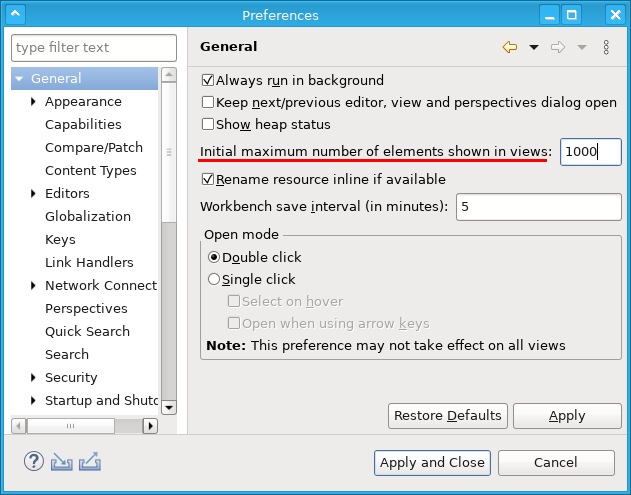
Other (3rd party) views can also read this preference to enable this feature for that view; this must be done explicitly for each view.
The support for incremental view updates was added to avoid UI freezes in large viewers, where SWT/JFace approaches the limits of the underlying native widget machinery while trying to render many thousands of elements, leading to minute long UI freezes.
Incremental view update is currently enabled in the following views:
- Package Explorer
- Project Explorer
- Problems
- Java Outline
- JUnit
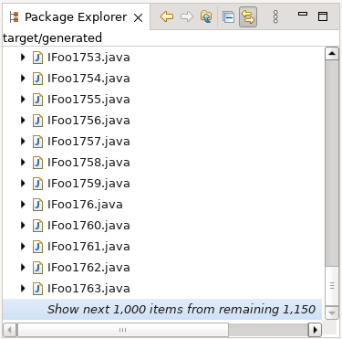
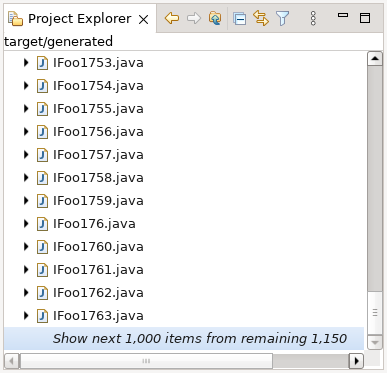
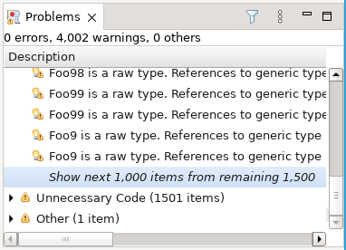
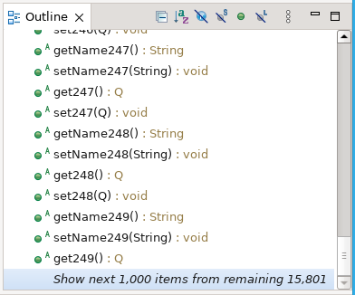
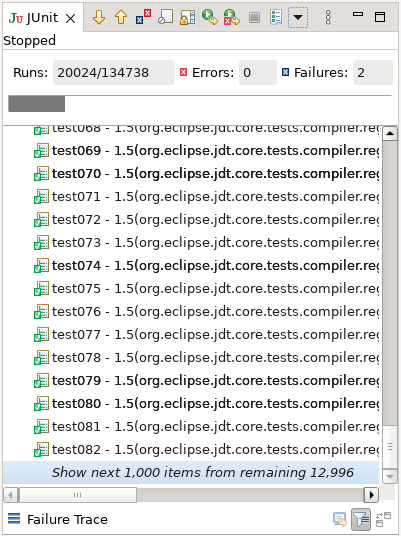
This new preference can be disabled in products by specifying
org.eclipse.ui.workbench/largeViewLimit=0 in the
plugin_customization.ini file or via an Oomph preference task.
In the same way, the preference value can be changed for products that need a lower or higher limit.
Previously the Features tab of the Installation Details dialog, unlike the dialog's Plug-ins tab, did not provide a filter field. That inconsistency has been addressed, making it easier to find details about a specific feature.
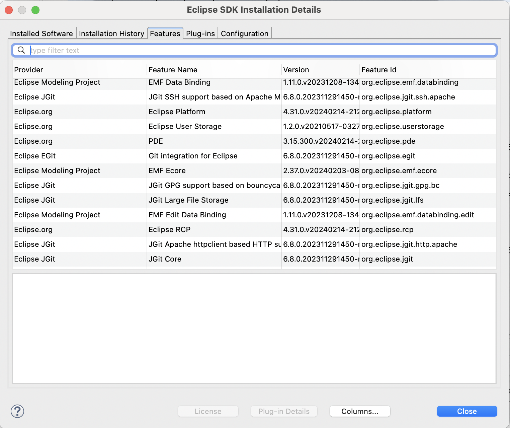
A new feature has been implemented in the Eclipse launch dialog, which alerts the user that, the tilde (~) character, which usually refers to the user's home directory according to many operating system shell semantics, is unresolved whenever they enter that character. Additionally, this enhancement displays the resolved path within a label, offering user clear insight into the specified path.
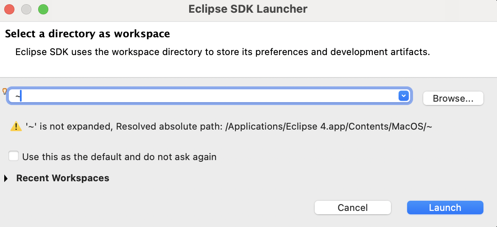
Distinguishing between the search patterns of concurrently open Quick Search dialogs was challenging, as they were all uniformly labeled as "Quick Search". A new functionality has been incorporated, wherein the search term is displayed alongside the "Quick Search" label in the title bar of the dialog. This enhancement ensures that each window is uniquely identifiable, now denoted as "Quick Search - " followed by the respective search term, thereby enhancing effortless navigation and improved user clarity.
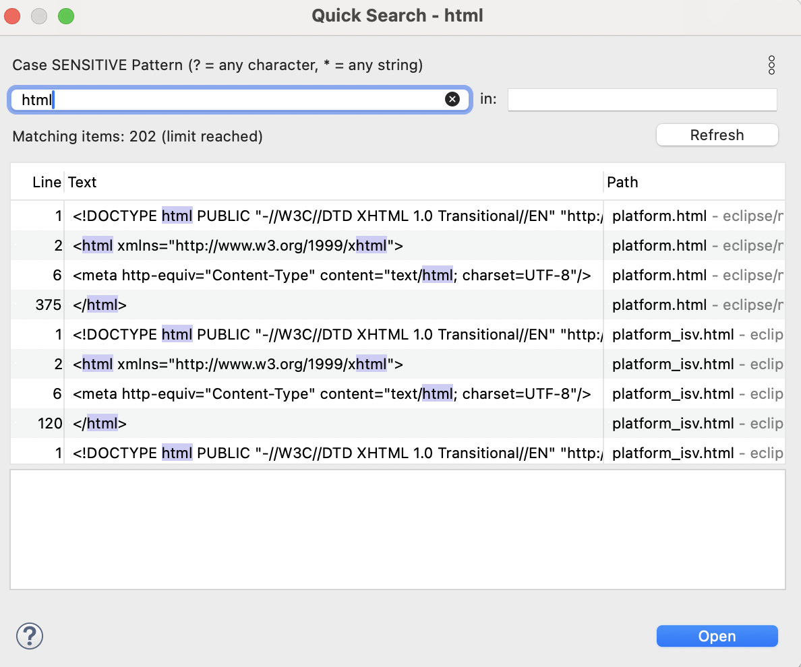
Text Editors
The number of differences between two files is shown on the toolbar of compare editor; this is equal to the number of change markers shown next to the scroll bar in compare editor. This feature is helpful when the files compared are large and have many differences that cannot be counted manually.
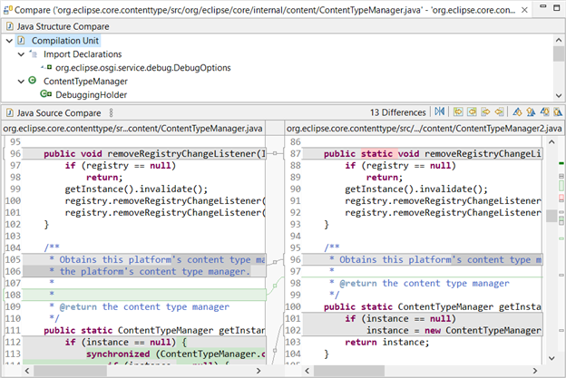
The number of differences changes based on the selection in the compilation unit of Java Structure Compare.
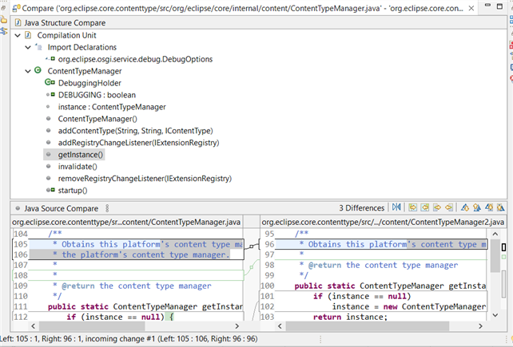
For the case that there are multiple editors suitable to open a given content type, the user can declare one of these editors as default editor, i.e., the preferred editor. Simply select the editor in the associated editors list and press the Default button. If there is no default editor, the first suitable editor found is used to open the content type.
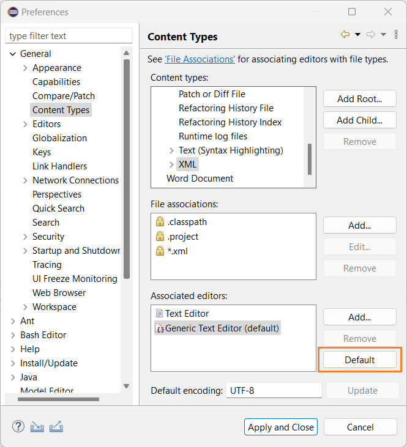
Themes and Styling
When using the Light theme on macOS, the background color of unselected tabs now slightly changes color when the user hovers over them with the mouse cursor. The same hovering behaviour already exists on Windows and when using the Dark theme.
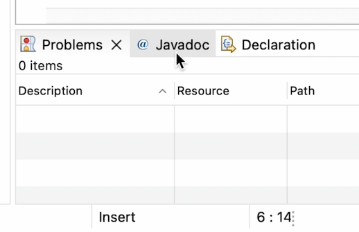
The Light theme now also highlights the active part with a blue underline just like it was already done when using the Dark theme.
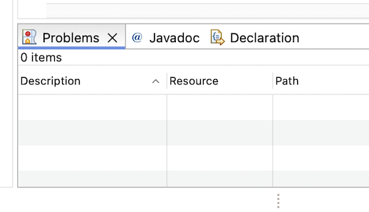
A new preference has been introduced to enhance the user experience for managing views. With this preference, users have more control over how view tabs are displayed.
Previously, as the number of views increased within a view stack, the tab titles became very small, displaying only icons. This made it more challenging for users to identify views solely based on icons, sometimes leading to a cluttered UI and decreased usability.
To address this issue, two options are now available in the Tab icons and titles in view areas section on the General > Appearance preference page:
-
Always show full titles: This option ensures that the full text of each view title is always visible in each tab, regardless of the number of views present.
It improves usability by making it easier for users to identify views by label.
By default this option is off.
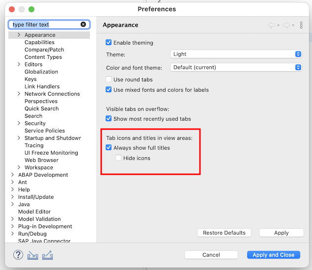 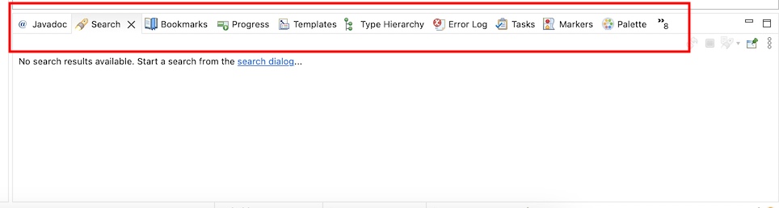 -
Hide icons: With this option selected, view icons are hidden, and only the full text of each view title is displayed in each tab.
This helps in decluttering the UI and ensures that the editor area remains the focal point, especially in scenarios where numerous views are open.
By default this option is off.
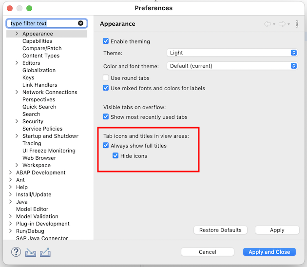 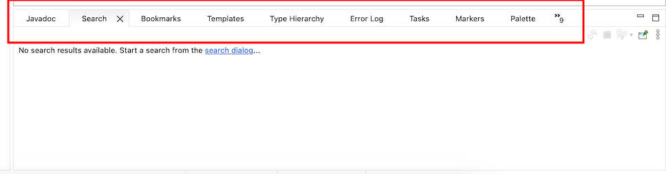
General Updates
Previously when Eclipse was restarted using File > Restart or File > Switch Workspace as well as after installing or updating from a p2 update site,
it restarted with same arguments as those in effect for the initial start.
Any manual changes made to the eclipse.ini, as well as changes made by p2 touchpoints when installing or updating, were ignored.
To actually apply the changes of a modified eclipse.ini, it was necessary to exit the application and restart it from the launcher.
Now the Eclipse launcher is enhanced to reload the configuration files on restart,
so any changes to the eclipse.ini take effect immediately.
In addition, any command line arguments specified for the initial launch remain in effect on restart,
except if the restart command contains --launcher.skipOldUserArgs.
Previously it was quite challenging to determine if or why a certain bundle was using other bundles or was used by other bundles.
There is now a new wires command that, for a specified bundle, prints all wires that are used by the bundle and any wires it provides to other bundles.
This provides a powerful tool for analyzing dependency problems and for determining why a bundle is actually used.
For example, you can open Host OSGi console and use the wires command as follows:
WARNING: This console is connected to the current running instance of Eclipse!
____________________________
Welcome to Apache Felix Gogo
g! ss org.eclipse.ui.workbench
id State Bundle
5018 ACTIVE org.eclipse.ui.workbench_3.131.100
g! wires 5018
Bundle org.eclipse.ui.workbench 3.131.100:
is wired to:
- com.ibm.icu 74.1.0
- because of Import-Package: com.ibm.icu.util
- jakarta.annotation-api 2.1.1
- because of Import-Package: jakarta.annotation; version="[2.1.0,3.0.0)"
- jakarta.inject.jakarta.inject-api 2.0.1
- because of Import-Package: jakarta.inject; version="[2.0.0,3.0.0)"
- org.apache.felix.scr 2.2.6
- because of Require-Capability: osgi.extender; filter:="(&(osgi.extender=osgi.component)(version>=1.2)(!(version>=2.0)))"
- org.eclipse.core.databinding.observable 1.13.200
- because of Require-Bundle: org.eclipse.core.databinding.observable; bundle-version="[1.2.0,2.0.0)"
- org.eclipse.core.databinding.property 1.10.200
- because of Require-Bundle: org.eclipse.core.databinding.property; bundle-version="[1.2.0,2.0.0)"
- org.eclipse.core.runtime 3.31.0
- because of Require-Bundle: org.eclipse.core.runtime; bundle-version="[3.29.0,4.0.0)"
- org.eclipse.e4.core.commands 1.1.300
- because of Import-Package: org.eclipse.e4.core.commands
- because of Import-Package: org.eclipse.e4.core.commands.internal
- org.eclipse.e4.core.contexts 1.12.500
- because of Require-Bundle: org.eclipse.e4.core.contexts; bundle-version="1.0.0"
- org.eclipse.e4.core.di 1.9.300
- because of Require-Bundle: org.eclipse.e4.core.di; bundle-version="1.1.0"
- org.eclipse.e4.core.di.extensions 0.18.200
- because of Require-Bundle: org.eclipse.e4.core.di.extensions; bundle-version="0.13.0"
- org.eclipse.e4.core.services 2.4.300
- because of Require-Bundle: org.eclipse.e4.core.services; bundle-version="2.2.0"
- org.eclipse.e4.ui.bindings 0.14.300
- because of Require-Bundle: org.eclipse.e4.ui.bindings; bundle-version="0.9.0"
- org.eclipse.e4.ui.css.swt 0.15.300
- because of Require-Bundle: org.eclipse.e4.ui.css.swt; bundle-version="0.9.1"
- org.eclipse.e4.ui.css.swt.theme 0.14.300
- because of Require-Bundle: org.eclipse.e4.ui.css.swt.theme; bundle-version="0.9.0"
- org.eclipse.e4.ui.di 1.5.300
- because of Require-Bundle: org.eclipse.e4.ui.di; bundle-version="0.9.0"
- org.eclipse.e4.ui.model.workbench 2.4.200
- because of Require-Bundle: org.eclipse.e4.ui.model.workbench; bundle-version="0.9.1"
- org.eclipse.e4.ui.services 1.6.300
- because of Import-Package: org.eclipse.e4.ui.services
- because of Require-Bundle: org.eclipse.e4.ui.services; bundle-version="1.3.0"
- org.eclipse.e4.ui.workbench 1.15.300
- because of Import-Package: org.eclipse.e4.ui.internal.workbench
- because of Import-Package: org.eclipse.e4.ui.internal.workbench.addons
- because of Import-Package: org.eclipse.e4.ui.workbench
- because of Import-Package: org.eclipse.e4.ui.workbench.modeling
- org.eclipse.e4.ui.workbench.addons.swt 1.5.300
- because of Require-Bundle: org.eclipse.e4.ui.workbench.addons.swt; bundle-version="0.10.0"
- org.eclipse.e4.ui.workbench.renderers.swt 0.16.300
- because of Import-Package: org.eclipse.e4.ui.internal.workbench.renderers.swt
- because of Import-Package: org.eclipse.e4.ui.workbench.renderers.swt
- org.eclipse.e4.ui.workbench.swt 0.17.300
- because of Import-Package: org.eclipse.e4.ui.internal.workbench.swt
- because of Require-Bundle: org.eclipse.e4.ui.workbench.swt; bundle-version="0.9.1"
- org.eclipse.e4.ui.workbench3 0.17.300
- because of Require-Bundle: org.eclipse.e4.ui.workbench3; bundle-version="0.15.0"; visibility:="reexport"
- org.eclipse.emf.ecore.xmi 2.37.0
- because of Require-Bundle: org.eclipse.emf.ecore.xmi; bundle-version="2.11.0"
- org.eclipse.help 3.10.300
- because of Require-Bundle: org.eclipse.help; bundle-version="[3.2.0,4.0.0)"
- org.eclipse.jface 3.33.0
- because of Require-Bundle: org.eclipse.jface; bundle-version="[3.31.0,4.0.0)"
- org.eclipse.jface.databinding 1.15.200
- because of Require-Bundle: org.eclipse.jface.databinding; bundle-version="[1.3.0,2.0.0)"
- org.eclipse.osgi 3.19.0
- because of Import-Package: javax.xml.parsers
- because of Import-Package: org.w3c.dom
- because of Import-Package: org.xml.sax
- because of Require-Capability: osgi.ee; filter:="(&(osgi.ee=JavaSE)(version=17))"
- org.osgi.service.event 1.4.1.202109301733
- because of Import-Package: org.osgi.service.event; version="[1.2.0,2.0.0)"
and is consumed by:
- org.eclipse.jdt.ui 3.31.100
- because it Require-Bundle: org.eclipse.ui.workbench; bundle-version="[3.131.0,4.0.0)"
- org.eclipse.ui 3.205.100
- because it Require-Bundle: org.eclipse.ui.workbench; bundle-version="[3.130.0,4.0.0)"; visibility:="reexport"
- org.eclipse.ui.editors 3.17.200
- because it Require-Bundle: org.eclipse.ui.workbench; bundle-version="[3.130.0,4.0.0)"
- org.eclipse.ui.genericeditor 1.3.300
- because it Require-Bundle: org.eclipse.ui.workbench; bundle-version="3.109.0"
- org.eclipse.ui.intro.quicklinks 1.2.300
- because it Require-Bundle: org.eclipse.ui.workbench; bundle-version="3.108.0"
On Microsoft Windows 10 or later, the Microsoft Defender can significantly slow down the startup and overall performance of Eclipse-based applications. The Eclipse IDE can now detect if Microsoft Defender is active, inform the user about it and, if desired, can exclude itself from future Defender scans.
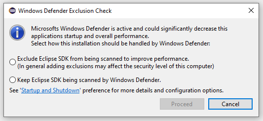
On Windows the General > Startup and Shutdown preference page offers further information
and allows the user to disable the startup check for new installations and to run the exclusion check again for the running installation.
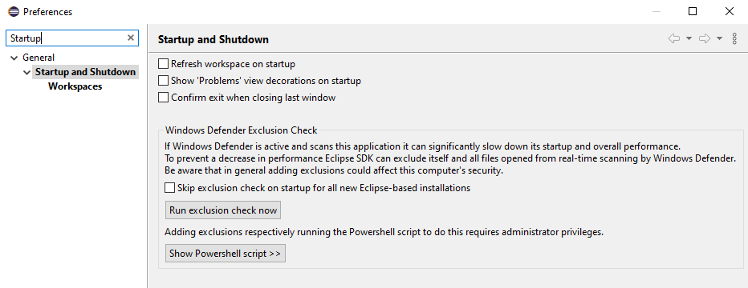
Creators of custom Eclipse-based products that use the org.eclipse.ui.ide.workbench application and want to suppress the new startup check for their product
can disable it by adding the following entry to their product's preferenceCustomization properties file:
org.eclipse.ui/windows.defender.startup.check.skip=true
To execute the startup check for products that run applications other than org.eclipse.ui.ide.workbench add the entry:
org.eclipse.ui/windows.defender.startup.check.app=<application-id-in-use>
Previously in Eclipse, the progress bar did not accurately reflect the progress relative to the total time. Specifically, the initial half of the progress bar advanced rapidly, while a noticeable delay occurred in the latter half. This discrepancy was due to the utilisation of bundle-changed events for progress determination, which resulted in an uneven progression due to the non-uniform nature of these events.
The progress is now determined as a function of the service level events occurring while the workbench is being bootstrapped. This gives more meaningful values about the progress the workbench has achieved towards completion. This modification has led to a more consistent and smooth advancement of the progress bar, leading to an overall improved user experience.